Денис Ермаков
3 года дизайна в EdTech
2 своих продукта в проде
3 курс, бизнес-информатика
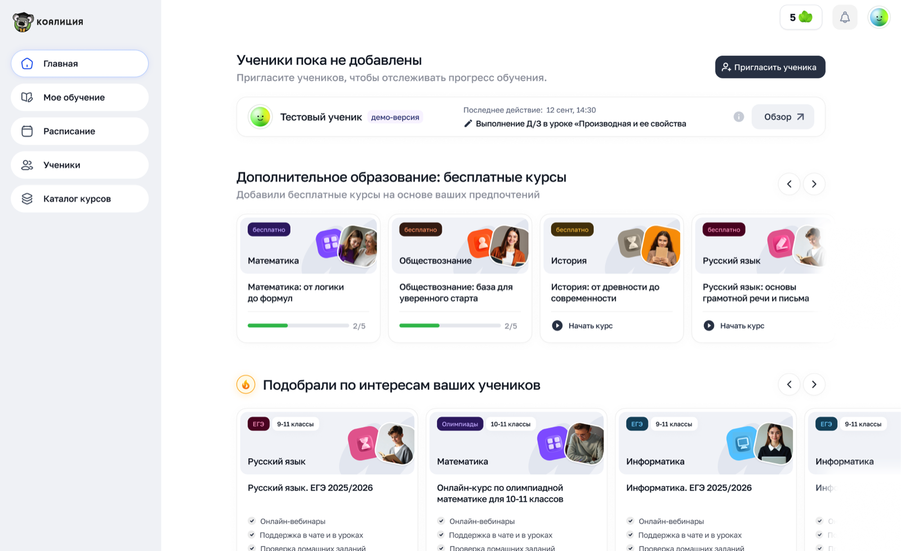
Карьера
Где я работаю, какими проектами занимаюсь и мой карьерный путь
Pet-projects
Как я развиваюсь вне работы, нахожу идеи и создаю решения
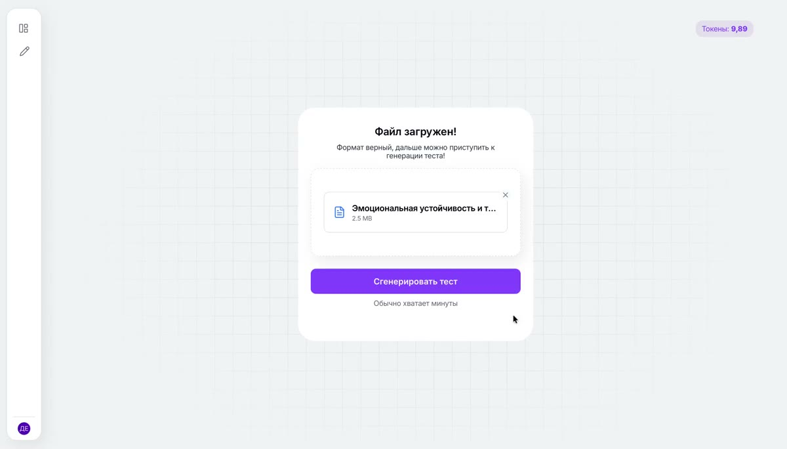
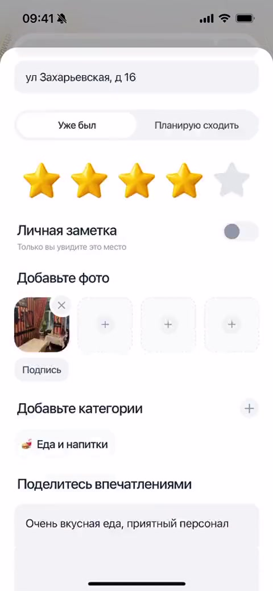
Тестовое
Первый экран «Работы»: ресёрч, гипотезы и живой прототип

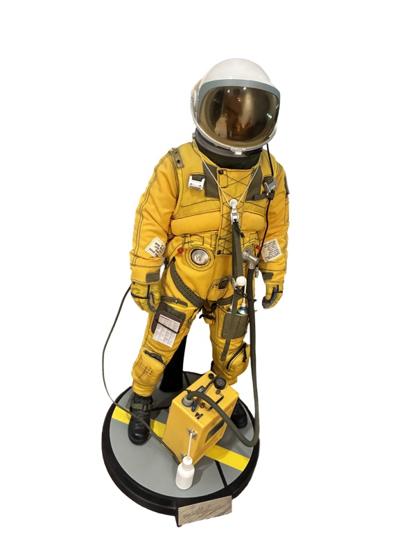
Обо мне
Чем занимаюсь помимо работы, на кого учусь и что мне нравится
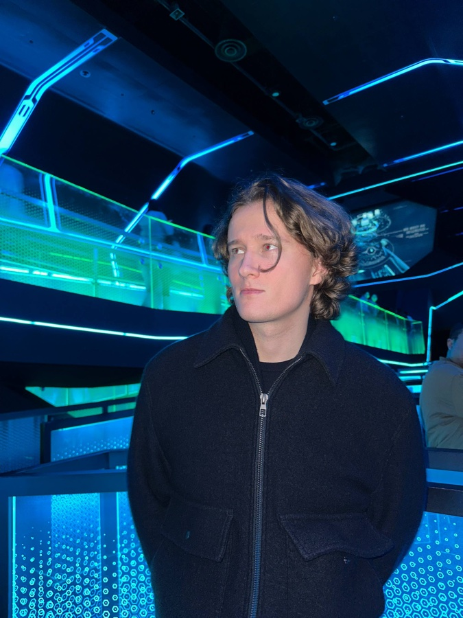
Из графического дизайна в продуктовый
B2B2C-платформа для подготовки к ЕГЭ, ОГЭ и олимпиадам. Заказчики — образовательные учреждения.
запрос от школ → ресёрч → макеты → демо команде → показ заказчику
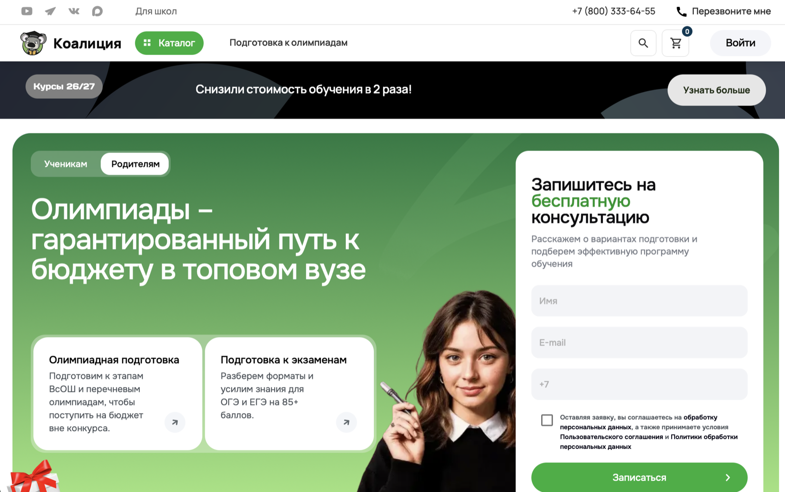
AI-конспект видео
Один из кейсов
преподаватели тратят много времени на заполнение карточки видеоконтента и не могут сосредоточиться на создании контента и проверке домашних заданий.
жалобы от менеджера и мои созвоны с преподавателями.
путь загрузки, экраны, состояния, ошибки.
расшифровка → таймкоды → конспект. AI ничего не публикует сам: преподаватель правит и сохраняет.
пилот на 10 преподавателях → общий прод.
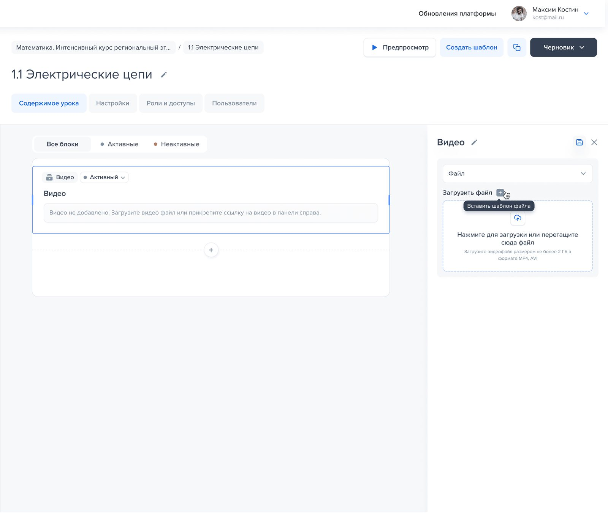
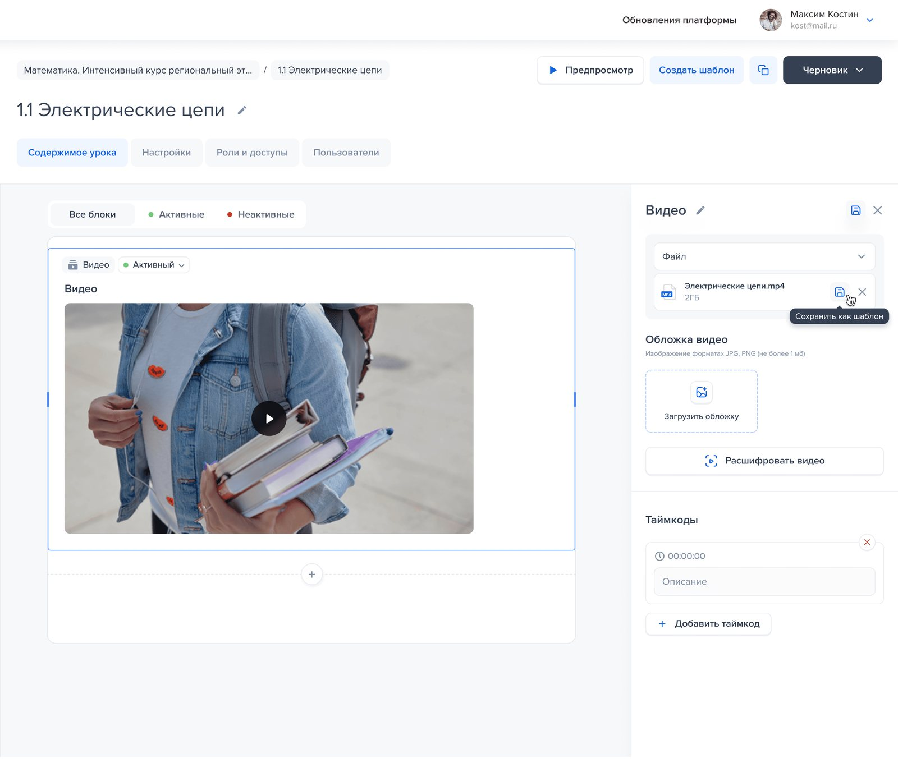
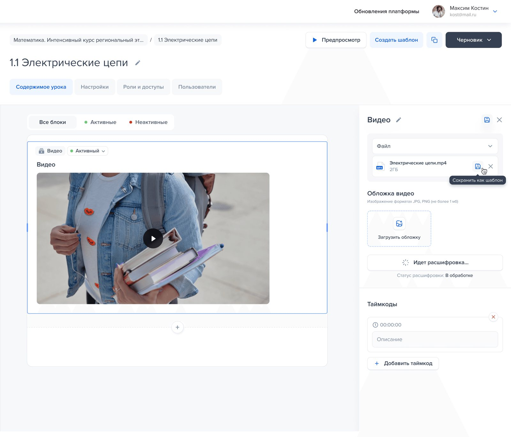
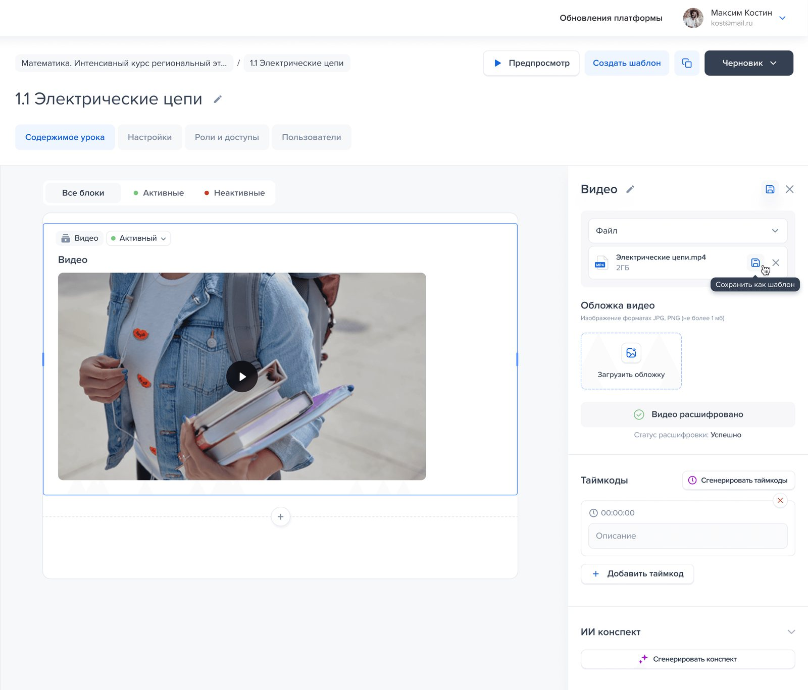
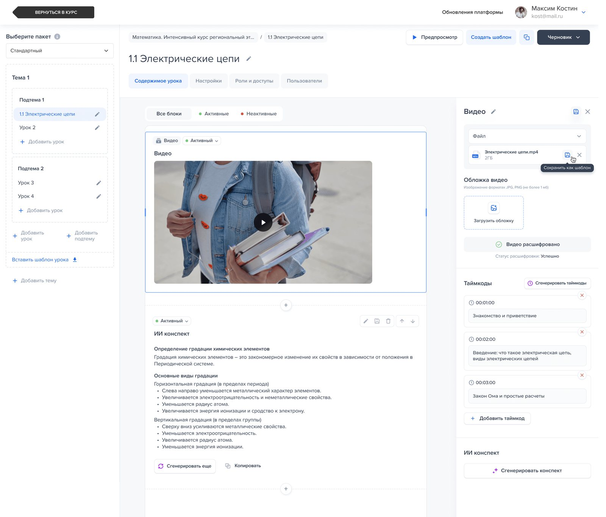
Как я делаю свои продукты
От своей боли до прода: один путь, два продукта
Mappy
Часто бывал в разных местах и не хотел терять этот опыт
61% забывают название понравившегося места
фото, оценка и метка на карте; места видят только друзья
коридорное тестирование: добавил подписи к фото, поправил навигацию
40% протестировавших возвращаются каждую неделю
ГПтест
всё чаще использовал нейросети для учёбы
за 2 недели: 60% уже проверяют знания через ChatGPT
загрузил материал и получил тест с разбором ошибок
тест на 20 людях (3,5 из 5), затем 4 интервью
20 активных, 5–6 сессий в неделю
Mappy
Карта мест, которые не хочется потерять
61% опрошенных забывают название понравившегося места, 53% теряют сохранённые ссылки и скриншоты — места, куда хотелось сходить, забываются.
4 глубинных интервью и опрос на 57 человек
личная карта с заметками, фото и оценками. Заметки бывают личные и общие — общие видят друзья.
40% протестировавших возвращаются каждую неделю
Как это работает
ГПтест
Тесты по своим материалам с разбором ошибок
люди учатся по своим материалам, но не могут быстро проверить, что усвоили: 31% не находят тест по нужной теме, у 39% вопросы в готовых тестах плохого качества или устаревшие.
опрос на 127 человек. 60% уже проверяют знания через ChatGPT, 39% не хватает объяснения ошибок.
загружаешь PDF или DOC и получаешь тест с разбором каждой ошибки.
20 активных пользователей, 5–6 сессий в неделю.
3 итерации, тест на 20 людях → 4 интервью → прод.
сервисом заинтересовались репетиторы, поэтому сейчас делаю кабинет преподавателя.
Как это работает
Первый экран «Работы»
Тестовое: экран, который помнит соискателя
редизайн первого экрана категории «Работа» для соискателя — поднять MAU экрана и возвращаемость.
экран одинаков для новичка и для того, кто ищет месяцами: ничего не помнит и не показывает, что изменилось с прошлого захода.
адаптивный верхний блок. Новичку — сколько вакансий в городе и кнопка «Указать пожелания»; категории показывают число вакансий и среднюю ставку. Активному — статус откликов и новое с прошлого захода. Поиск и фильтры не сбрасываются. Резюме, отклики и кабинет вынесены вниз отдельным таббаром.
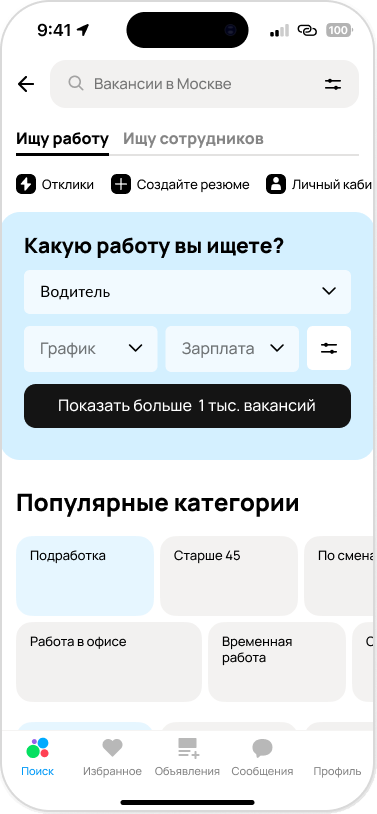
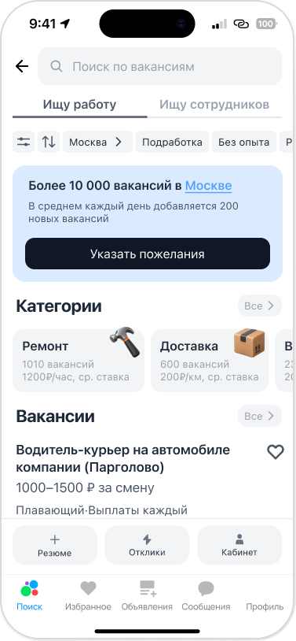
Новичок и Активный
Один экран, два состояния
- 1
Фильтры пустые: истории поиска нет, человек задаёт её сам.
- 2
Наверху масштаб рынка и кнопка «Указать пожелания» — первое действие.
- 3
Категории с деньгами: сколько вакансий и средняя ставка.
- 1
Прошлый поиск («Менеджер +1») — фильтры сохранены.
- 2
Данные по предыдущим откликам: «2 работодателя ответили» и кнопка в чат.
- 3
Категории подстроены под поиск: продажи и офис.
- 4
Резюме, отклики и кабинет вынесены вниз отдельным таббаром: основные кнопки не скроллятся, важное можно быстро посмотреть.
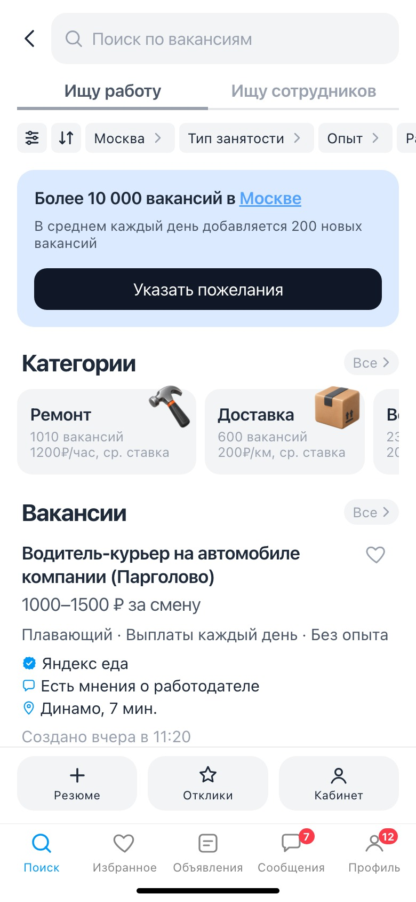
1 2 3 4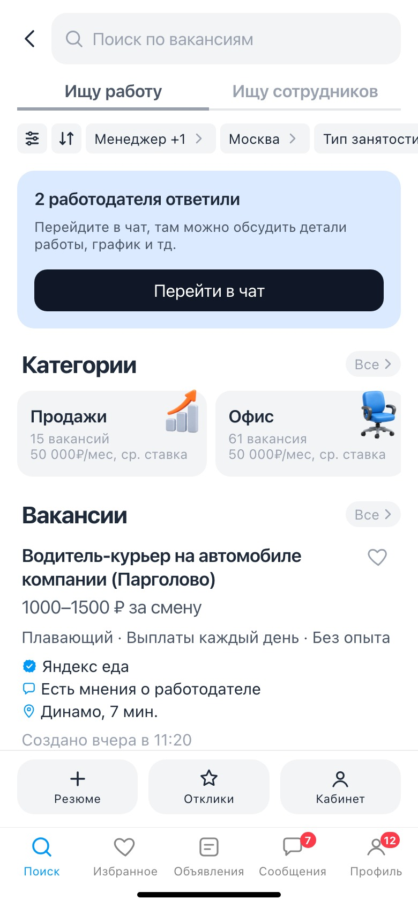
1 2 3 4Ресёрч
Что выяснил до макета
экран решает задачу «настроить поиск и уйти». Не хватает памяти — что искал, куда откликался — и свежести — что изменилось.
масс-профессии и транспорт — больше 60% аудитории категории. Ядро — быстрый старт и подработка, а не офисный поиск.
платные отклики — общая боль Профи.ру и Юду. У Авито отклик бесплатный — это преимущество.
3 соискателя — при повторном заходе все первым делом смотрят свои отклики и подборку. Выборка маленькая: это сигнал, а не доказательство.
MAU по сегментам категории «Работа»
склад, продавцы, стройка, общепит
водители, курьеры, такси
меньшинство на Авито
Ядро Авито — быстрый старт и подработка. Гипотезы про первый экран строил под этот сегмент.
Профи.ру · RuStore, 09.2026«Дорогие отклики, зарабатывать сложно стало…»
Юду · RuStore, 09.2026«На счету 114 р, я не могу оставить отклик за 59 р…»
Источник MAU: click.ru по данным Авито, февраль 2026. Сегменты частично пересекаются.
Гипотезы и метрики
Как проверить, что сработало
если первый экран показывает «что у меня с поиском», а не только форму поиска, люди чаще возвращаются — потому что появится ради чего.
прототип на 5 людях — куда нажмут первым, затем A/B по возвратам.
если людям нужны только свежие вакансии, а не статус. Тогда наверх — быстрый поиск, статус — в отдельную вкладку.
Первое полезное действие — быстрее
Наверху: сколько вакансий в городе и кнопка «Указать пожелания»; в категориях — число вакансий и средняя ставка.
Метрика: Activation Rate — доля новичков с откликом в первые 24 часа.
Есть ради чего вернуться
Наверху: статус откликов и новое с прошлого захода.
Метрика: Return Rate D7. Опережающий сигнал — TTFA, время до первого действия.
Усиливать ядро — подработку рядом с домом — или тянуться к офисному поиску? Экран работает для обоих сценариев: меняются инвестиции за ним, а не макет.
Дизайну учусь на практике, в работе. В вузе (3 курс, МБИ) разбираюсь, как цифровые бизнесы строят, продвигают и как ими управляют.
Одна из причин, почему хочу в большой продукт: видеть, как дизайн влияет на бизнес.
За последний год научился собирать рабочие MVP с AI: интеграции, аналитика, хранение данных.
кино (смотрю и разбираю, что увидел) и коллекция фигурок солдатиков разных эпох.
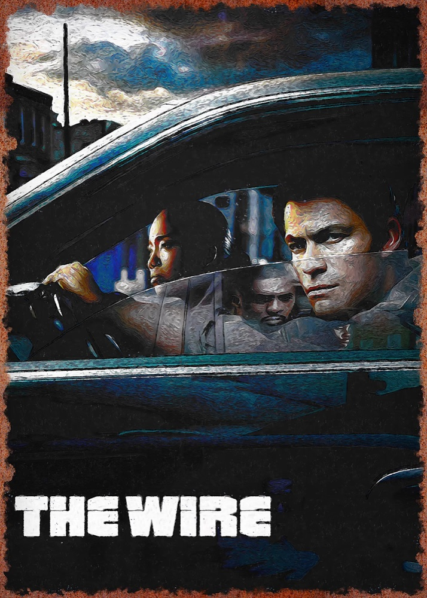
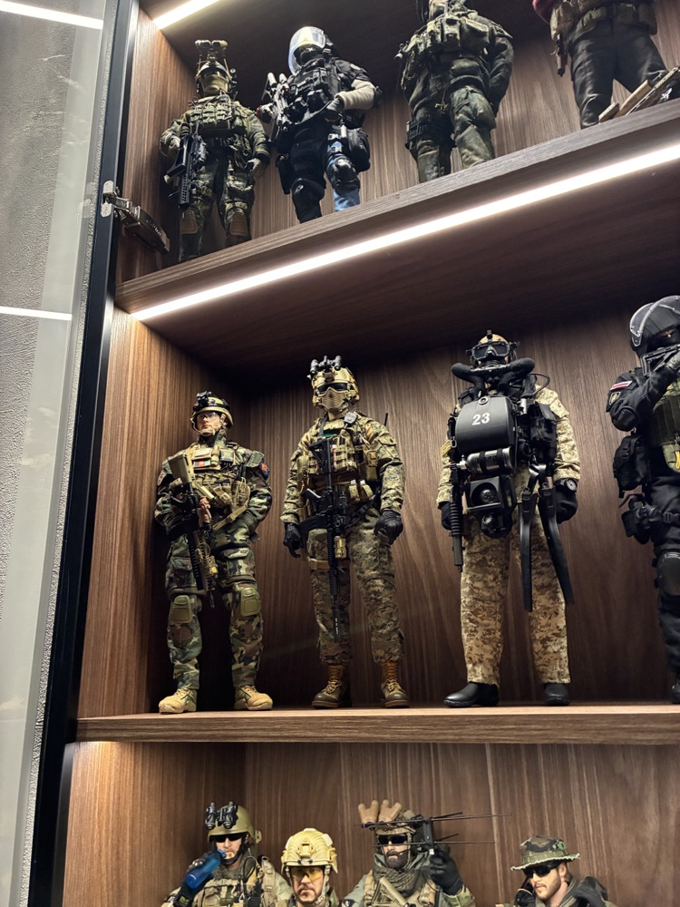
Коллекция
Один из любимых сериалов
Чему хочу научиться
По тому, как устроена работа в Авито
Интервью и опросы в своих продуктах. ГПтест: опрос на 127, тест на 20, 4 интервью
Исследования на большой аудитории и по регулярному процессуВыбрал метрики для тестового (Activation Rate, Return D7), меряю WAU и сессии в своих продуктах
Строить A/B-эксперименты и читать результаты на реальных данныхUI kit в Коалиции, свои компоненты с токенами
Развивать большую систему вместе с командой, а не только соблюдать еёПоказываю макеты команде и заказчику на демо
Регулярные разборы и насмотренность: прокачать уровень UIРабота в команде с другими дизайнерами
Работать с продактом, аналитиком и исследователем над метриками запуска